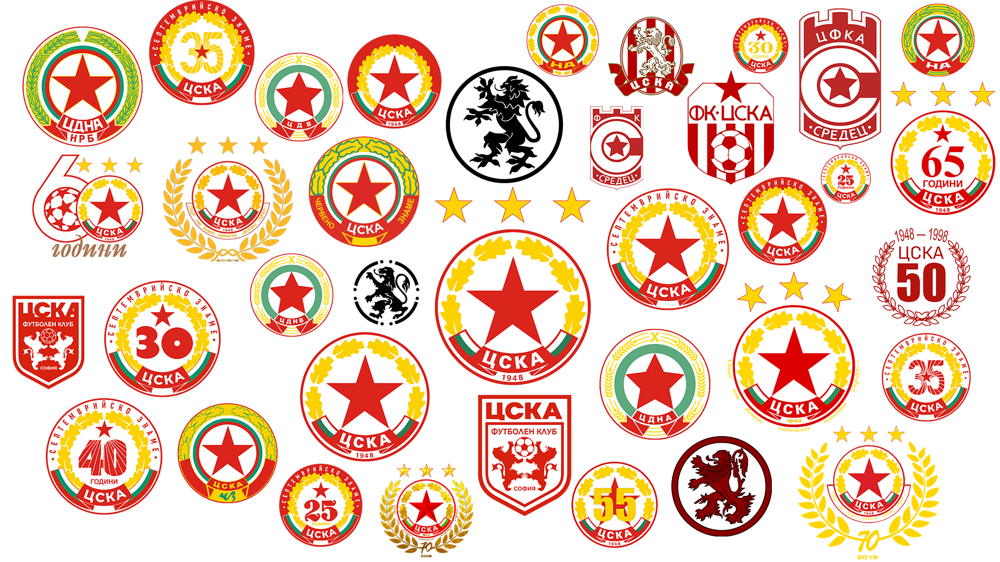

Стадион „Българска армия“ е клубният стадион на ЦСКА. Намира се в Борисовата градина, в центъра на София. Първоначално на това място е било разположено игрището на АС-23. В периода 1965 – 1967 е извършена основна реконструкция, а през 1982 г. на стадиона е поставено и електрическо осветление. През 2000 г. стадионът е оборудван с нова озвучителна уредба „Динакорд“ – 48 kW.
През лятото на 2016 г. изцяло е подменено тревното покритие и са изградени нова поливна и дренажна система.
Към 2005 г. има 22 015 седящи места, разпределени в четири сектора – сектор „А“ (6417 места), сектор „Б“ (4889 места), сектор „В“ (5689 места) и сектор „Г“ (5020 места). Покритите места на стадиона са 2100. Игралното поле е с дължина 105 м и ширина 66 м. Освен футболния терен спортният комплекс включва тенис кортове, баскетболна зала и лекоатлетическа писта, зали за пресконференции и за ветераните и музей на славата.
Новият стадион на ЦСКА ще бъде устроен така, че природата в Борисовата градина да остане непокътната – това ще постигнем, като запазим насипите на съществуващото вече съоръжение и като го построим в по-малки от настоящите очертания. Отделно, ще върнем почти 50% от площта на прилежащите площи на парка за свободно ползване от посетителите на Борисовата градина.Стадионът ще е максимално енергийно ефективен и щадящ околната среда – за това сме се погрижили, интегрирайки най-модерните отоплителни, напоителни и LED осветителни системи.
Новият стадион да има препратка към богатите история и наследство на ЦСКА – това ще запазим като изненада за бъдещ етап.
След обединението на ЦДВ и „Септември“ е избрана нова емблема – три кръга, наложени един върху друг, с цветове бяло-зелено-бяло. В най-външния са разположени житни класове, символ на плодородието и успеха.[34] В центъра на емблемата е поставена червена петолъчка, символ на военната мощ и войната.[35] В емблемата присъства и прегъната на четири места лента с надпис „ЦДВ“. В периода 1948 – 1962 единствено е сменяно името на върху лентата след различните преименувания. След обединението с „Червено знаме“ житните класове са заменени с дъбови листа, символ на силата и издръжливостта. Зеленият кръг вече е с цветовете на българския трибагреник, а под лентата е добавено съкращението ЧЗ („Червено знаме“). През 1964 г. се появява вариант на емблемата, в който дъбовите листа са уголемени, а съкращението ЧЗ е заменено от „Червено знаме“. През 1968 г. е извършена нова промяна след обединението със „Септември“. Премахнат е зеленият кръг, като негово място са сложени дъбовите листа, а вместо тях се появява червен (или бял) полукръг с надпис „Септемврийско знаме“. Червената лента вече завършва с българския трибагреник. В същото време за евротурнирите се използва различна емблема, представляваща червен щит с петолъчка в горния край. В средата на щита пише ФК ЦСКА, а под надписа са разположени четири вертикални червени райета с футболна топка върху тях. След скандала с разформироването е измислена изцяло нова емблема, представляваща щит с крепостни бойници в горната част. В горната част има надпис „ФК“, а в долната – „Средец“. В средата на емблемата е разположена голяма буква „с“, в чийто център има петолъчка, обгърната с кръг. Тази емблема е използвана официално до 1989 г. През 1987 г. се появява нова емблема на СК ЦСКА, използвана неофициално и от футболния клуб ЦФКА „Средец“, представляваща щит, в чиято горна част има надпис „ЦСКА“, а под него е вписан друг щит с надпис „футболен клуб“.[37][38] Под втория надпис два изправени лъва държат футболна топка. В краката им стоят надписите „София“ и „1948“. През 1989 г. след отделянето на Септември се появява нова емблема, стилизирана от предишни.[38] В бял кръг с червен кант са вписани в полукръг шест дъбови листа, обрамчващи червена петолъчка. В долната част на емблемата има червена лента, прегъната на четири места, завършваща с българския трибагреник. В лентата има надпис „ЦСКА“, а под нея – годината 1948. След падането на комунистическия режим в България е решено да се използва неофициалният модел от 1987 г., тъй като червената петолъчка в нея тогава се свързва с комунистическото управление. През 1999 г. със смяната на ръководството и обособяването на ЦСКА в акционерно дружество временно се използва емблемата на ЦСКА „Септемврийско знаме“ от 1968 г. с изключение на надписа „Септемврийско знаме“, а впоследствие за официална емблема е приета създадената през 1989 г., която е възприета от всички отбори, членуващи в ОСК ЦСКА (София). През 2005 г. след спечелване на рекордната 30 титла към емблемата са добавени 3 златни звезди. През 2017 г. по случай 70-ата годишнина от създаването на клуба емблемата е обновена с юбилеен дизайн.
 Към началната страница